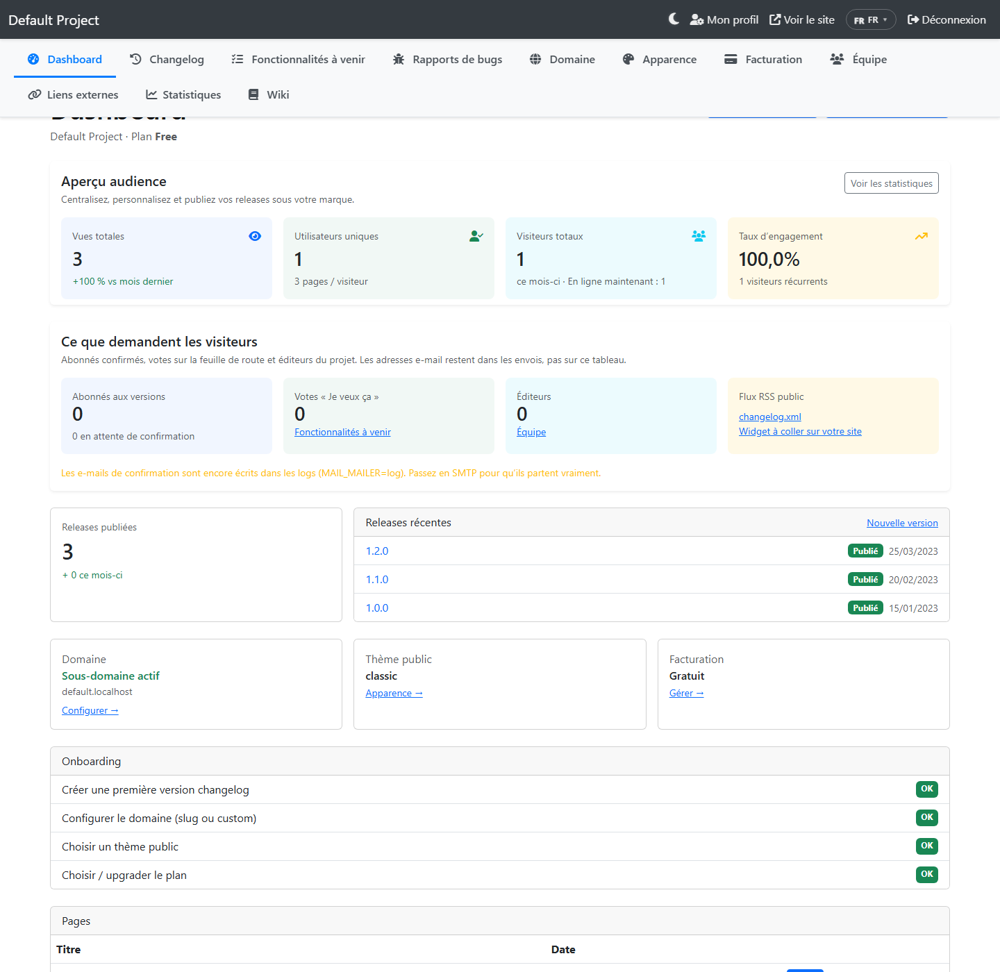
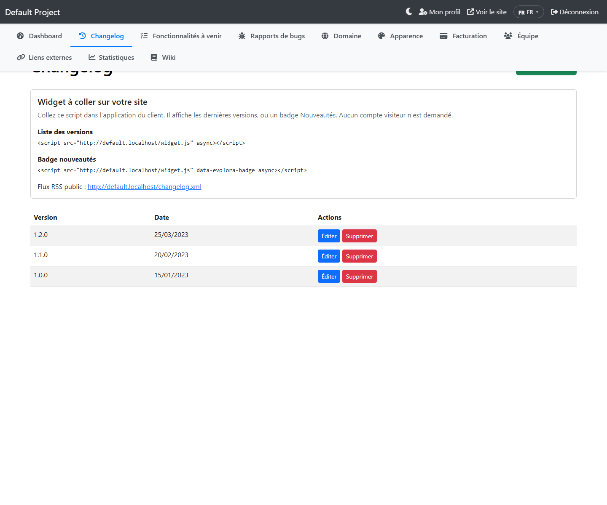
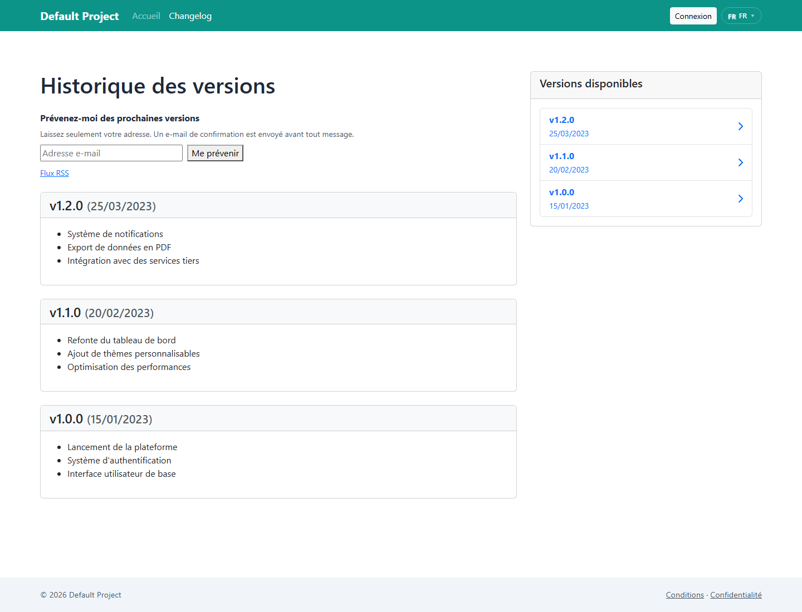
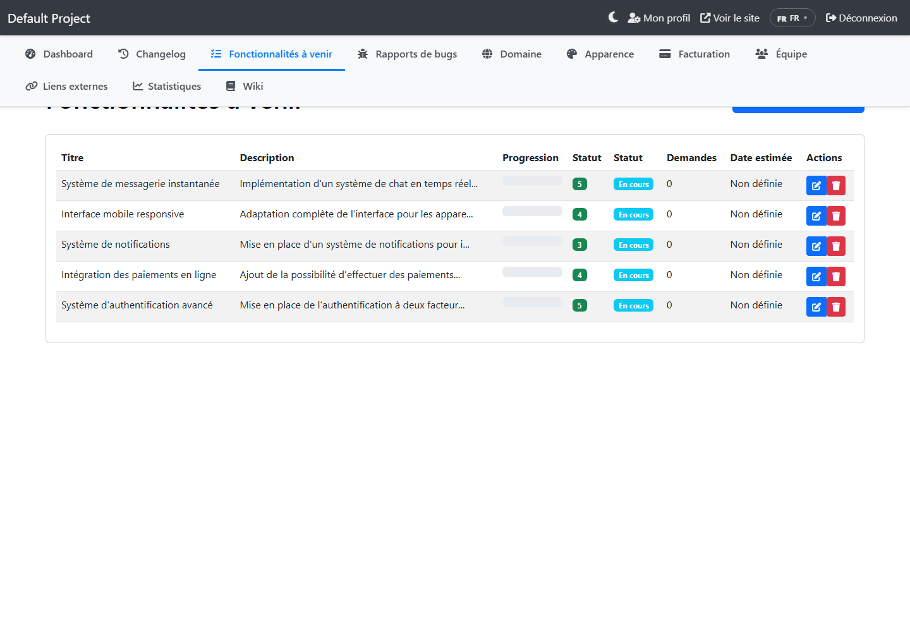
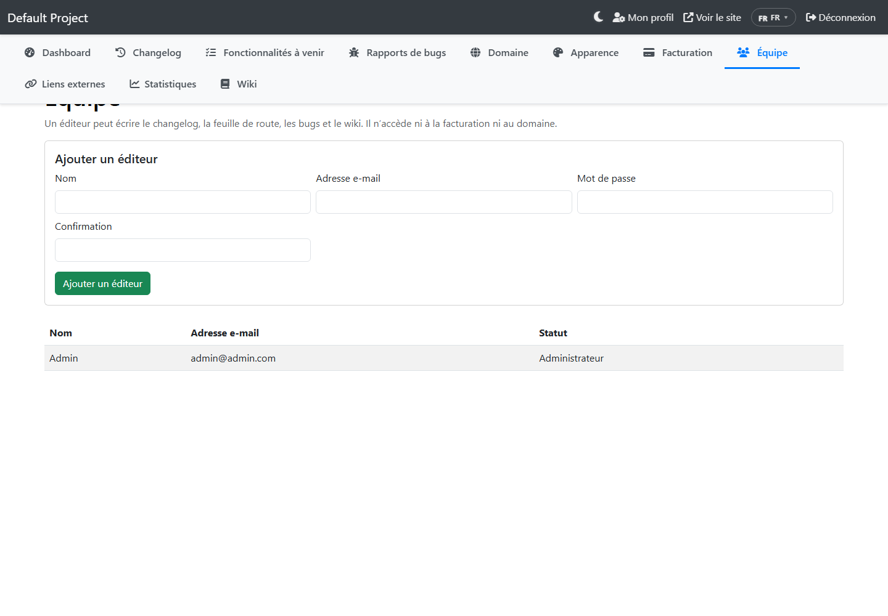

Configuration et utilisation
Une fois l’assistant terminé, le superadmin crée ou ouvre un projet. Le client travaille dans /admin sur le domaine central. Les visiteurs voient le changelog sur le sous-domaine du projet. Les écrans ci-dessous viennent de l’application, pas d’une maquette.
https://slug.votredomaine.fr, ou le domaine personnalisé une fois vérifié.
Tableau de bord
Le tableau de bord reprend l’audience (vues, visiteurs, engagement) et, depuis la 3.0.0, ce que les visiteurs demandent vraiment. Il n’affiche pas les adresses e-mail : seulement des compteurs.

- Abonnés aux versions : adresses qui ont confirmé. La ligne en dessous compte celles qui n’ont pas encore cliqué le lien.
- Votes : total des « Je veux ça » sur la feuille de route. Le lien ouvre la liste admin, colonne Demandes.
- Éditeurs : comptes invités, sans facturation ni domaine. Le lien n’apparaît que pour l’administrateur du projet.
- Flux RSS : ouvre
/changelog.xmldu site public. Le second lien revient à la page Changelog, où se copie le widget.
MAIL_MAILER vaut encore log. Les confirmations sont écrites dans storage/logs et n’arrivent pas dans les boîtes mail. Passez en SMTP : voir le fichier .env. Le site reste utilisable sans ça.
Un éditeur ne voit ni le lien Facturation, ni le lien Domaine, ni le bandeau e-mail. Ces pages répondent 403 s’il tape l’adresse.
Publier une version
Admin → Changelog → Nouvelle version. L’enregistrement d’une nouvelle version prévient les abonnés déjà confirmés. Modifier une version existante ne renvoie pas d’e-mail.

Flux RSS
Adresse fixe, sans compte :
https://slug.votredomaine.fr/changelog.xmlLes lecteurs RSS et les outils s’y abonnent. Le flux contient le numéro, la date et un extrait en texte. Les pages publiques annoncent aussi ce flux.
Prévenir des prochaines versions
Sur le changelog public, le visiteur laisse seulement son adresse et clique « Me prévenir ». Il reçoit un e-mail avec un lien. Tant que ce lien n’est pas ouvert, aucune version ne lui est envoyée. Le message à l’écran est le même que l’adresse soit nouvelle ou déjà connue.

Votes sur la feuille de route
Chaque idée publique a un bouton « Je veux ça ». Un second clic retire le vote. Le vote est lié au navigateur, pas à un compte. Dans l’admin, la colonne Demandes montre le total. Elle ne remplace pas la priorité choisie par l’administrateur.

Suivre un bug
Sur la fiche publique d’un signalement, le visiteur laisse son adresse : « Prévenez-moi quand le statut change ». Même règle : e-mail de confirmation d’abord, puis un message seulement si le statut change vraiment (ouvert, en cours, résolu, fermé). Cette fiche est publique seulement si le module bugs est inclus dans le plan.
Widget sur le site du client
Le script se charge depuis le site public du projet, pas depuis le domaine central. Il affiche le numéro, la date, un court extrait et le lien vers le changelog. Il n’écrit pas le HTML reçu tel quel.
Liste des dernières versions :
<script src="https://slug.votredomaine.fr/widget.js" async></script>Badge Nouveautés (un point tant que la dernière version n’a pas été ouverte dans ce navigateur) :
<script src="https://slug.votredomaine.fr/widget.js" data-evolora-badge async></script>Plusieurs personnes sur le projet
Admin → Équipe. L’administrateur saisit un nom, une adresse et un mot de passe d’au moins 8 caractères. Le compte créé est un éditeur : changelog, feuille de route, bugs et wiki. Il n’ouvre pas la facturation, le domaine, ni la page Équipe.

Le bouton de mot de passe temporaire n’affiche le nouveau mot de passe qu’une fois. Pour retirer quelqu’un, on supprime l’éditeur. On ne peut pas retirer le dernier administrateur depuis cet écran.
Réglage e-mail à ne pas oublier
MAIL_MAILER=smtp
MAIL_HOST=mail.votredomaine.fr
MAIL_PORT=587
MAIL_USERNAME=noreply@votredomaine.fr
MAIL_PASSWORD=...
MAIL_FROM_ADDRESS=noreply@votredomaine.fr
MAIL_FROM_NAME=EvoloraPuis, en SSH : php artisan config:clear. Sans SSH, supprimez bootstrap/cache/config.php s’il existe. Le détail des autres variables est sur la page Fichier .env.